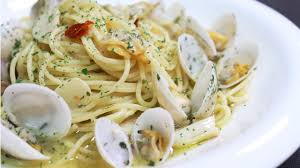
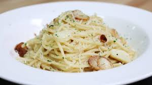

봉골레(Vongole)는 조개를 뜻하는 이탈리아어. 조개 국물을 기본으로 하여 만들어내는 조개 소스와 깔끔하고 담백한 맛이 인상적인 가장 인기있는 파스타 요리
오일 소스 파스타의 가장 기본 메뉴. 태생은 나폴리가 포함된 캄파니아 지방이다. 이름만큼이나 심플한 파스타로, 마늘을 편으로 썰어 올리브 오일에 익혀 마늘향을 내고, 거기에 스파게티 면을 곁들이는 가장 단순한 형태의 오일 파스타이다. 페페론치노, 파슬리 등 향신료를 더할 수도 있으나 어디까지나 기본은 마늘과 올리브유.